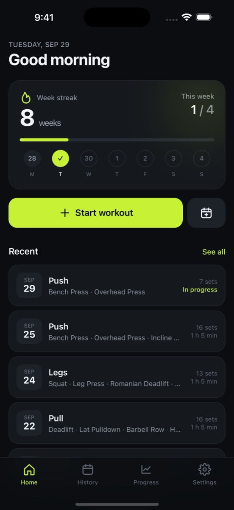
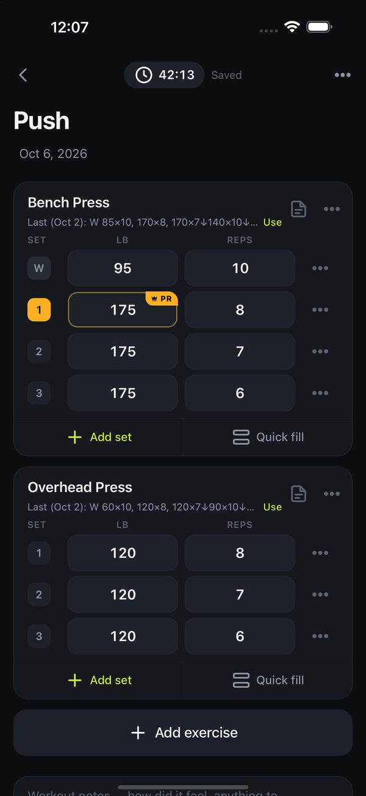
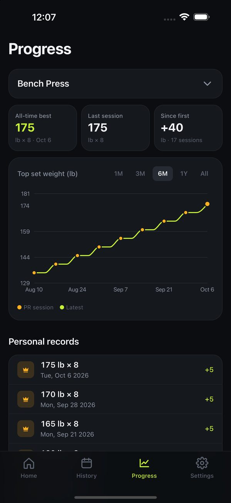

A workout log that stays on your iPhone
Log sets in seconds, see your records, and keep your weekly streak. Free, with no ads, no account and no subscription.



What it does
- Fast logging. Add an exercise, type a weight and reps, and the sets below fill in. Repeat your last session with one tap.
- Records and progress. A personal record is flagged the moment you lift it. Every exercise has a chart of your top weight.
- A weekly streak built around the number of days you choose to train.
- Strength and cardio. Warm-ups, drop sets and sets to failure. Time, distance, speed, incline, heart rate and more.
- Plans. Set up a workout ahead of time and check exercises off on the day.
- Made for iPhone. A Home Screen widget, optional reminders, and six themes.
Your data is yours
SplitLog has no accounts and no server. Your log is kept on your iPhone and is never sent to the developer or anyone else. You can save a backup file, export a spreadsheet, or erase everything at any time.
Learn more
- How to use SplitLog, including moving to a new iPhone
- Privacy policy
- Help and support